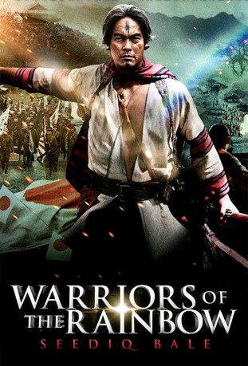

#1810 Warriors of the Rainbow
 
 IMDB-Wertung: 7.5 / 10
IMDB-Wertung: 7.5 / 10  Metascore: 62
Metascore: 62 
In den Jahren zwischen 1895 und 1945 steht Taiwan unter japanischer Kolonialherrschaft. Brutal versuchen die Japaner die auf der Insel lebenden, untereinander Krieg führenden Bergstämme unter Kontrolle zu bekommen. Bis es dem charismatischen Häuptling Mouna Rudo gelingt, die verfeindeten Seedig-Stamme zu vereinen und zum kriegerischen Aufstand gegen die verhassten Kolonialherren zu mobilisieren. Doch die Japaner schlagen mit aller Härte zurück, setzen Flugzeuge und Giftgas ein, um die Rebellion zu beenden.
Jahr: 2011
Dauer: 276 Minuten
FSK: 18
Land: Taiwan Studio: Senator Home EntertainmentTonspuren:
Untertitel: Deutsch,
Auflösung: 1080p (1920x1080) Größe: 10342 MB
Genre: Action, Drama, Geschichte
Regisseur: Te-Sheng Wei
Drehbuch: Te-Sheng Wei
Soundtrack:
Darsteller:
- Nolay Piho als Mona Rudao
- Chih-Hsiang Ma als Temu Walis
 Masanobu Andô als Genji Kojima, Constable at Tonbara clan
Masanobu Andô als Genji Kojima, Constable at Tonbara clan- Sabu Kawahara als General Yahiko Kamada
- Vivian Hsu als Obing Tadao aka Hatsuko Takayama
- Mei-Ling Lo als Obing Nawi aka Hanako Kawano
- Landy Wen als Mahung Mona, Mona's Daughter
- Da-Ching als Mona Rudao - Young
- Pawan Nawi als Chief Rudao Luhe, Mona's Father
- Yakau Kuhon als Tado Mona, Mona's Eldest Son
- Pawan Neyung als Baso Mona, Mona's Younger Son
- Yuan-Jie Lin als Pawan Nawi
- Chih-Wei Cheng als Biho Sapo
- Yi-Fan Hsu als Ichiro Hanaoka aka Dakis Nomin
- Soda Voyu als Jiro Hanaoka aka Dakis Nawi
- Hayung Gaki als
- Bayan Kenbo als
- Gaki Baunky als
- Laka Umaw als
- Yong-cheng Kao als
- Teymu Boru als
- Bagah Pawan als
- Chao-Ming Chin als
- Yawei Basang als
- Sabulo als
- Wei-cheng Chuang als
- Jiru Taylung als
- Tudaw Macang als
- Yumin Silan als
- Idi Tusang als
- Suyan Masing als
- Yûichi Kimura als Satsuka Aisuke
- Jun'ichi Haruta als Egawa Hiromichi, Police chief in Wushe area
- Minoru Matsumoto als Katsumi Yoshimura, Constable at timber factory
- Sonrei Yoshioka als Police
- Ju-Lung Ma als Han Chinese Trader
- Chie Tanaka als Matsuno Kojima, Wife of Officer Kojima
- Chi-Wei Cheng als Wu Jin-dun, the Shop Owner
- Pong Fong Wu als Taiwanese volunteer armies leader
- Michio Hayashida als Hua-Lien Police Chief
- Akira Hibino als General Oshima, Commander of occupying force
- Yoshitaka Ishizuka als Yasuichiro Fukabori
- Yukihiko Kageyama als Kikukawa
- Kenji Kasai als
- Junji Kumagai als
- Hiroshi Noguchi als Admiral Kabayama Sukenori, Governor-general of Taiwan
- Shiang-Chu Tang als Li, Ching-Fang, Special envoy of China
- Masaru Yoshitake als
Datei: X:\FSK18-Eastern\Warriors of the Rainbow (2011, FSK18, 1920x1080).mkv seit 25.08.2015
Festplatte: FSK18
 Es gibt insgesamt 102 Filme in der Gruppe 'FSK18-Eastern'
Es gibt insgesamt 102 Filme in der Gruppe 'FSK18-Eastern'